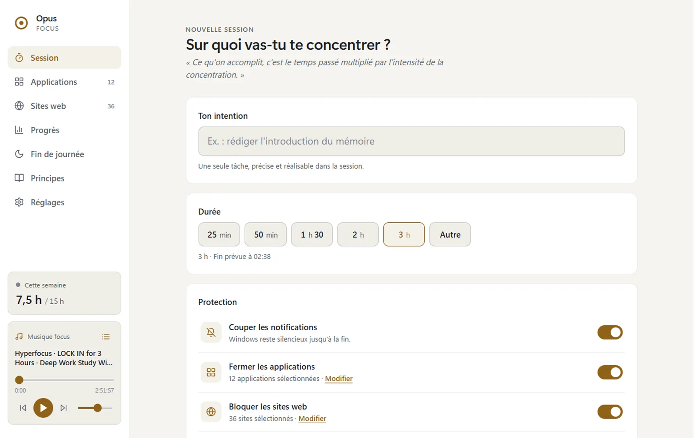
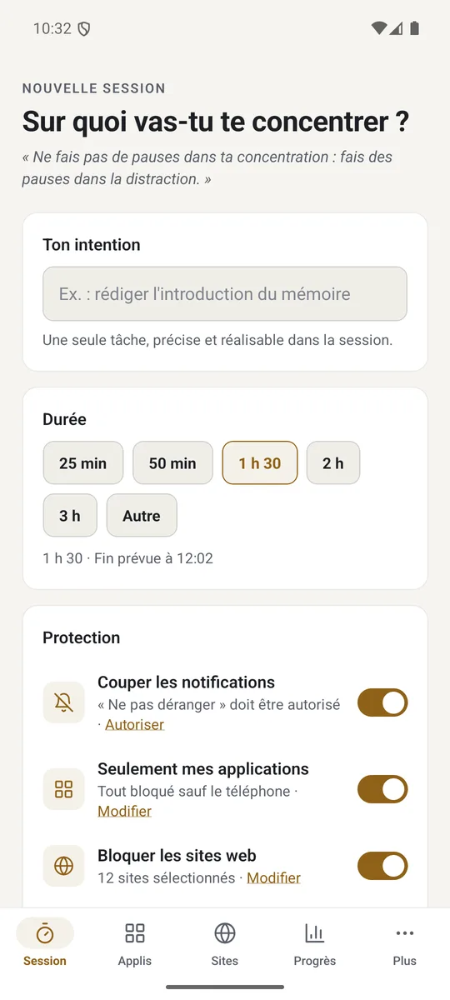
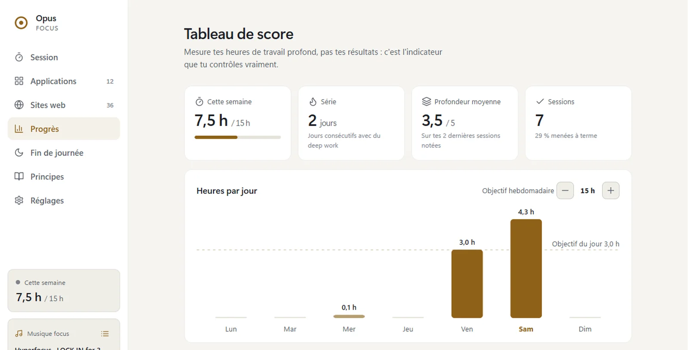
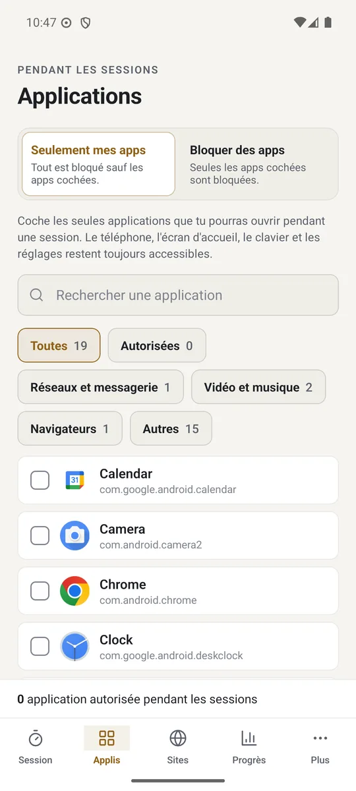
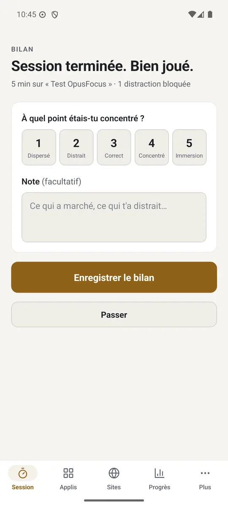

Notifications coupées
Windows reste silencieux, Android passe en « Ne pas déranger ». Tes réglages d'avant reviennent à la fin.
Pour Windows · aussi sur Android · Gratuit
OpusFocus coupe les notifications, ferme les applications et bloque les sites qui te distraient sur ton PC, le temps d'une session de travail profond. Inspiré du livre Deep Work de Cal Newport.


Fonctions
Écris ton intention, choisis une durée, lance la session. OpusFocus s'occupe du reste jusqu'à la dernière minute, même si tu fermes l'application.
Windows reste silencieux, Android passe en « Ne pas déranger ». Tes réglages d'avant reviennent à la fin.
Coche les distractions (réseaux, jeux, vidéo). Sur Android, le mode « Seulement mes apps » bloque tout sauf l'essentiel.
Un catalogue prêt à cocher, plus tes propres sites. Les sous-domaines sont bloqués aussi.
Pour abandonner, il faut recopier une phrase que tu as choisie. On peut ajouter des blocages en cours de route, jamais en retirer.
Heures de la semaine, série de jours, profondeur moyenne. Chaque session se termine par un bilan de 1 à 5.
Tes pistes, reprises là où tu t'étais arrêté. La musique peut démarrer et s'arrêter avec la session.
Aperçu
Pensé d'abord pour ton poste de travail Windows, là où se fait le vrai travail.

La même application sur Android, avec les mêmes sessions, les mêmes règles et le même bilan.


Sous le capot
| Protection | Windows | Android |
|---|---|---|
| Notifications | Notifications Windows coupées, puis restaurées | « Ne pas déranger », puis retour au réglage d'avant |
| Applications | Les applications cochées sont fermées dès qu'elles s'ouvrent | L'application bloquée est remplacée par l'écran « Reste concentré » |
| Sites | Redirection via le fichier hosts (mode administrateur) | VPN local qui ne filtre que le DNS, sans rien envoyer ailleurs |
| Fin à l'heure | Moteur en arrière-plan, la fenêtre revient pour le bilan | Compte à rebours en notification, reprise après redémarrage |
« Ne fais pas de pauses dans ta concentration : fais des pauses dans la distraction. »
D'après Cal Newport, Deep Work
Télécharger
Gratuit, sans compte. Choisis ta plateforme.
Windows 10 ou 11 · 9,5 Mo
OpusFocus-Setup.exe.Bloquer les sites demande le mode administrateur, activable depuis Réglages. Les autres protections fonctionnent sans.
Android 7.0 ou plus récent · 55 Mo
OpusFocus.apk.Android 13 et plus : pour activer l'accessibilité, ouvre la fiche de l'application dans les Paramètres, menu ⋮, puis « Autoriser les paramètres restreints ».